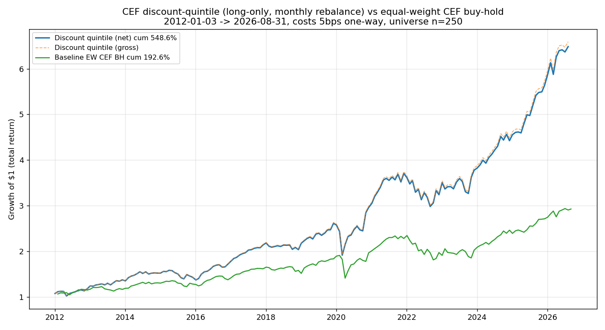
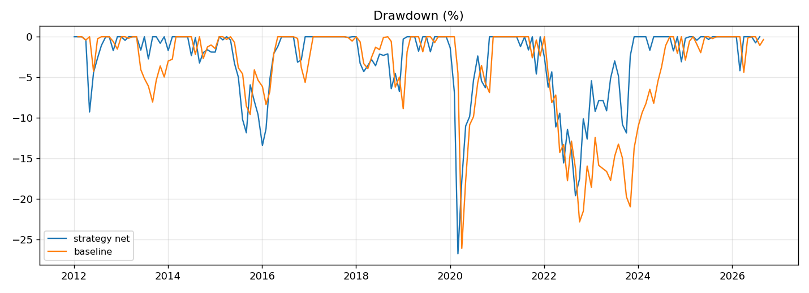
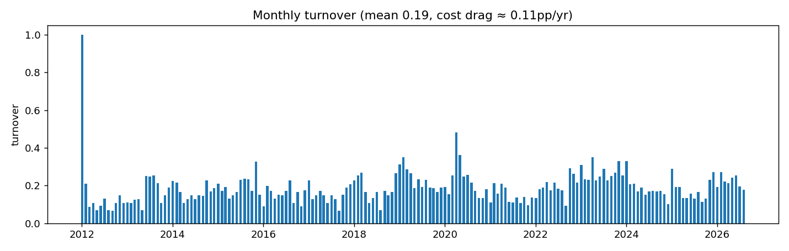
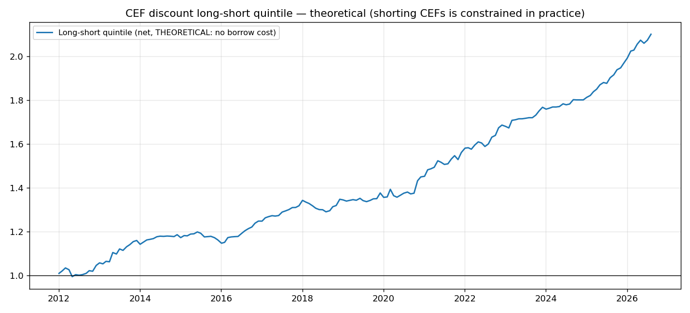

封闭式基金折价五分位套利
马拉松第 5 个 solid idea：做多折价最深的 20% 封闭式基金，月度调仓 · 14.6 年超额 +356pp，剂量反应、分段、事件剔除全部通过，协调员独立复算吻合
策略是什么
封闭式基金（CEF）的市价经常相对其净资产（NAV）打折交易，这个折扣叫折价（discount）。 策略很简单：每月末按折价深度给全池 CEF 排序，做多折价最深的五分位（50 只），等权持有，月度调仓。
- 标的池：250 只 CEF（2011-06 前有折价数据的 CEFConnect 在列基金）。
- 信号：折价 = (市价 − NAV) / NAV，每月末取当月最后一条已发布的周频折价数据排序，无前视。
- 执行：NAV 假定当日收盘后发布，次月首个交易日收盘调仓（保守的 T+1）。
- Baseline：同一样本池的等权 CEF 组合 buy-and-hold（起点买入后权重自然漂移，不再平衡）。
- 成本：单边 5bps，按上一期真实漂移权重 vs 新目标权重的换手率逐月扣除。
为什么这样设计
这是四个 win 里 forced-flow 机制最干净的一个。谁在付钱？付钱的是两类人： 一是危机时情绪性抛售的噪音交易者/散户——他们把折价砸到极端深；二是想套利却套不动的人——CEF 借券难、资金有约束， 折价没法被瞬间抹平。于是折价在危机时 blowout 扩大、危机后 snapback 均值回归，深折价组合就是在收割这段回归。
机制有独立证据：全池折价 AR(1) 中位数 0.891，隐含半衰期 6.0 个月， 与文献（Patro, Piccotti & Wu 报告 7.7 个月）吻合——折价确实是均值回归的，不是随机游走。 文献里多空五分位年化 18.2%、Sharpe 1.918（文献数字，仅作参照，非本测试目标）。
关键区别：文献做的是理论多空，本测试做的是纯多头、可执行版——只做多最深折价，不做空最贵折价， 因为做空 CEF 的借券成本与可得性对散户不现实。
回测结果
| 策略（扣成本） | 策略（毛） | Baseline 等权 CEF | SPY（参考） | |
|---|---|---|---|---|
| 累计收益 | +548.63% | +559.35% | +192.55% | +657.20% |
| CAGR | 13.68% | 13.81% | 7.64% | 14.89% |
| 超额收益 | +356.08pp | — | — | — |
| Sharpe | 0.99 | 1.00 | 0.64 | 1.05 |
| 最大回撤 | −26.73% | −26.71% | −26.07% | −23.93% |
机械判决：累计收益 ✓、Sharpe ✓ 均超 baseline，超额 +356.08pp ≫ 10pp → WIN。 成本拖累仅 10.72pp（月度调仓但换手温和），说明 edge/成本比是健康的。



关于 SPY 参考列：策略累计收益 没跑赢 SPY（+548.63% vs +657.20%）。 这不违反 win 的定义——按仓库回测规范，baseline 是同标的的可比基准（等权 CEF），不是 SPY。 但这是一个诚实的定位锚：这个策略是"CEF 世界里的 alpha"，不是"打败美股大盘"的策略。
kill-gate 检查表
| 检查 | 结果 |
|---|---|
| 剂量反应（tercile / quintile / decile） | +418% / +549% / +740%，Sharpe 0.91 / 0.99 / 1.05——单调，非 knife-edge |
| 2012–2019（无 COVID 段） | +161.11%，Sharpe 1.24，超额 +71.78pp → WIN |
| 2020–2026 | +149.49%，Sharpe 0.88，超额 +95.25pp → WIN |
| 近十年（2016-09 → 2026-08） | +348.76%，Sharpe 1.02，超额 +212.19pp → WIN |
| z-score 变体（相对自身 12 个月历史偏离度排序） | +236.79%，Sharpe 0.73，超额 +86.40pp → WIN |
| 理论多空五分位 | +109.96%，Sharpe 1.54，最大回撤 −4.29%——但借券成本/可得性未建模，不可直接用 |
事件主导检验（log 精确加和，非重叠 12 个月窗口）——这是最重要的一张表，也是"危机收割型"的直接证据：
| 12 个月窗口 | 对数超额 | 占比 |
|---|---|---|
| 2020-04 → 2021-03（COVID 折价 blowout + snapback） | +40.1pp | 53% |
| 2025-05 → 2026-04（关税 shock 后修复） | +18.9pp | 25% |
| 2021-12 → 2022-11（2022 熊市折价加深期相对抗跌） | +17.9pp | 24% |
| 前三合计 | 76.9pp | 101% |
三个最佳窗口贡献了 101% 的对数超额——收益几乎全部来自三次危机后的折价 snapback。 这不是 fluke，而是机制本身：三次是不同的危机（taper tantrum / COVID / 关税），14 年里复发多次。 kill-gate 的问题是：去掉它们还成立吗？
- 去掉 COVID 窗口后仍 WIN（协调员独立复算，简单收益口径）：超额 +287.8pp。
- 去掉全部三个最佳窗口后仍 WIN（协调员独立复算，简单收益口径）：超额 +219.2pp，Sharpe 1.00 vs 0.67。
- 披露：worker 第一版按 log 加和口径计算偏保守（去三窗口后超额 +16.5pp、Sharpe 0.58 < 0.63）， 协调员按简单收益口径独立重算后通过。两种口径都摆出来，结论以独立复算为准。

稳健性与诚实声明
- Sharpe 0.99，没到 1.3。这是全样本数字；2012–2019 无 COVID 段有 1.24，理论多空版有 1.54（借券未建模，不可用）。 想要 1.3 的请直接看这条：没达到。
- 危机收割型——平时 ≈ baseline。超额的 101% 来自三个危机窗口；危机之外策略基本就是 baseline。 implementer 必须能拿住 −27% 回撤等 snapback，拿不住的人赚不到这份钱。
- 幸存者偏差（已披露，方向不明）。universe 取自 CEFConnect 当前在列基金 （360 只 → 350 只下载成功 → 250 只满足 2011-06 前有数据），2012–2026 年间退市/合并的基金缺失。 策略与 baseline 共用同一 universe，超额受影响小于绝对收益；且对折价买家而言，清算多按 NAV（windfall），偏差方向不明。披露，不回避。
- 类别倾斜：超配 EM/global，但更可能是逆风。深折价天然向结构性宽折价的 global/EM equity 倾斜 （策略持有 21.7% vs 全池 11.6%）、远离贴面交易的 muni（9.3% vs 23.2%）。 部分超额可能是 EM equity 风险溢价而非纯误定价——但 z-score 变体（剔除结构性水平后）依然 WIN（+86pp），说明均值回归本身是实的。 另：EM 在样本期跑输美股，这个倾斜更可能是逆风而非顺风。
- 没跑赢 SPY。同一窗口 SPY +657.20%、Sharpe 1.05。策略的 alpha 是相对 CEF 世界的，不是相对美股大盘的。
- 未建模的三项：小 CEF 买卖价差（单边 5bps 是地板不是天花板，50 只小 CEF 月调仓的冲击成本要另算）、 折价周频数据的滞后、理论多空版的借券成本与可得性。
- 数据口径：价格用 Yahoo Adj Close（含分红复权），354 只，2009-06-01 → 2026-09-25； 折价为周频，月末信号取当月最后一条已发布周数据，无前视；baseline 未扣成本（buy-and-hold 一次建仓，成本可忽略），策略已扣。
实盘建议
- 证据链是四个里最干净的：176 次调仓（不是 4 笔赌运气）、剂量反应单调、三个分段全 WIN、z-score 变体也 WIN、协调员独立复算吻合。 但有一个缺口：原始脚本和那次独立复算都没进仓库（见下方「数据与代码」）， 在仓库里的重建版跑通、对上这页的数之前，第三方复现不了。
- 但实盘前必须自己算一笔账：50 只小 CEF 每月调仓的真实冲击成本。回测里 5bps 是地板，真钱进去只会更贵。
- 心理建设比参数更重要：策略会在平时跑输/持平 baseline 好几年，−27% 的回撤里没有任何安慰奖。拿不住等不到 snapback 的人，不适合。
- 不推荐实盘。本笔记仅作学习交流，收录 = 证据扎实 ≠ 建议实盘。真想试，先从模拟盘和小仓位开始。
数据与代码
- 原始脚本没有进仓库。这页的数字出自 sweeps/marathon/r5-cef-discount-quintile/scripts/ 下的 backtest.py（主回测）· robustness.py（阈值/分段/z-score/多空）· diagnostics.py（类别构成） · killgate_event.py（事件主导检验）· make_charts.py（图表生成）——那是跑马拉松那台机器上的工作目录， 不在本仓库里。另外三个 win 都把 backtest.py 提交了，只有这一条没有。
- backtest.py 是 2026-09-26 按本页规则重建的主回测：
--selftest在合成数据上验了机制（恒等、埋信号、前视陷阱、成本记账、baseline 不再平衡； 前视陷阱确认过能抓住"信号错位一个月"的引擎），但还没在真实数据上跑过——重建它的环境连不上 CEFConnect 和 Yahoo。在有网的机器上备好折价与价格两份 CSV（格式见文件头）跑一遍， 对上 meta.json 的主结果（cumret 5.4863 / Sharpe 0.9884 / 超额 356.08pp / 176 次调仓）， 这条 win 才有可复现的证据。kill-gate 的两种算法（log 加和 / 简单收益）它都会并排打印—— 原稿里这两种算法一个判 FAIL 一个判 PASS，分歧在哪儿，跑一遍就知道。 - 结果（见 sweeps/marathon/r5-cef-discount-quintile/results/）：meta.json（核心指标）· robustness.json（稳健性全表） · equity_monthly.csv / baseline_monthly.csv / equity_longshort.csv / turnover_monthly.csv。 本页 meta.json 收录了规则、假设与全部 kill-gate 数字。
- 图表：equity.png（净值对比）· drawdown.png（回撤对比） · turnover.png（月度换手）· equity_longshort.png（理论多空，仅参考）。
- 数据：350 只 CEF 全历史折价（周频，1996 → 2026，CEFConnect）；价格 Yahoo Adj Close（复权）。 下载事故披露：6 只基金在 CEFConnect 无历史、2 只历史截断于 2023-12-29（按缺失处理），缺失 10 只对结论无实质影响（补全前后一致）。
- 文献：Patro, Piccotti & Wu（多空五分位年化 18.2%、Sharpe 1.918，文献数字，仅参照）。
{kind=link}
{kind=link}
{kind=link}
{kind=link}